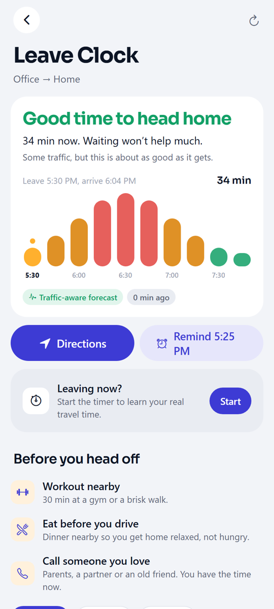
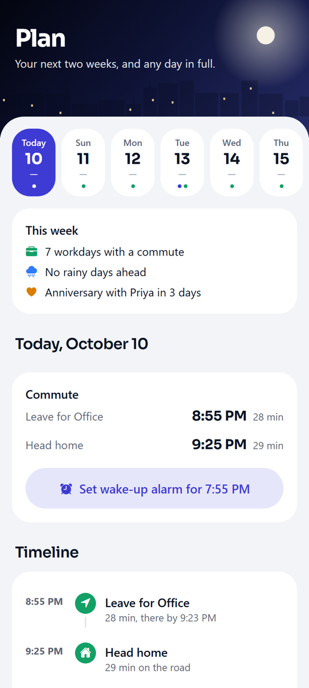
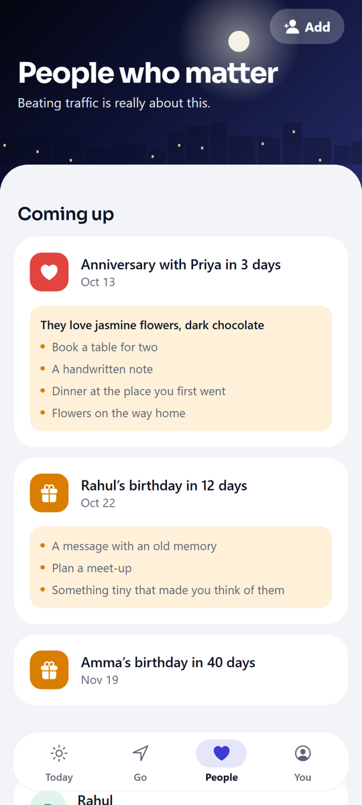
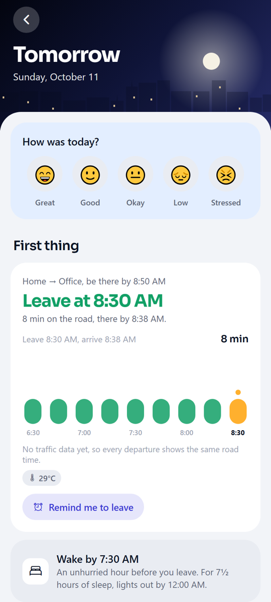

Turn jam time into your time.
Leaving at 6 PM can take 1 h 25 min. Leaving at 7:20 takes 28. Kairo shows you the difference, and gives that hour back to your life.
- 🏋Workout nearbyThree gyms within a kilometre.
- 🍛Eat before you driveGet home relaxed, not hungry.
- 📞Call AmmaIt’s been five days.
- 🌹Flowers on the wayYour anniversary is in 3 days.
One calm companion for your day.
Not another to-do app. Kairo connects your commute to the rest of your life.
Leave Clock
Ten departure times on one chart. The best moment, the last safe moment, and what waiting costs.
Plan two weeks
Weather, sunrise, leave times, calendar, birthdays and your own plans on one timeline. Holidays and busy days built in.
Go anywhere
Airport, hospital, mall: see the calm time to go, opening hours and your own notes from last time.
People who matter
Pick people from your contacts. Kairo remembers birthdays and anniversaries and nudges you to stay close.
Big goals, with a coach
“Apply for a new job”: small steps, your own reason, and a weekly check-in that helps when you’re stuck.
Phone time
See where your minutes go, with kind reflections and one gentle nudge when you choose a limit.
Real alarms
A wake-up alarm in your Clock app, timed from tomorrow’s best leave time.
Evening reset
Tomorrow’s first trip, the weather and a short checklist, so mornings feel easy.
Mood check-in
One tap shapes your suggestions. Low days get a one-minute breathing exercise; good days get a plan.
On your home screen.
Two widgets, so the right moment and your reason are always one glance away.
A look inside.
The sky in the app follows the real time of day: dawn, day, dusk and night.




Install in a minute
- Download Kairo.apk on your Android phone.
- Open it. If Android asks, allow your browser to install apps.
- Tap Install, then open Kairo and set up your day.
Updates install over the old version and keep your data. Android 8 or newer.
What Kairo asks for, and why
- LocationPlan trips from where you are. “All the time” only if you turn on trip learning, which notices when you leave or reach a saved place.
- NotificationsLeave alerts, morning brief, evening reset and reminders.
- ContactsOnly when you choose people from your contacts.
- CalendarRead-only, for tomorrow’s first event and holidays.
- Usage accessOptional, for Phone time. App usage never leaves your phone.